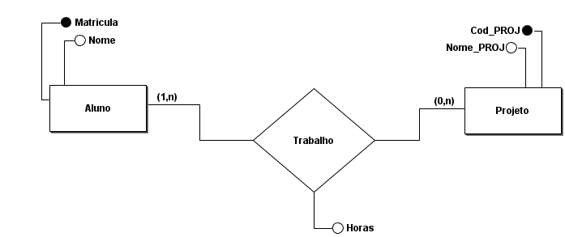

O que é Banco de dados?
Um banco de dados é um sistema organizado para armazenar, gerenciar e recuperar informações de maneira eficiente. Ele consiste em uma coleção estruturada de dados que podem ser acessados, atualizados e consultados conforme necessário. Os bancos de dados são amplamente utilizados em aplicativos de software para armazenar informações de forma confiável e acessível, permitindo a manipulação de dados de maneira eficaz e segura.
Quais os métodos para representar?
Bancos de dados podem ser representados de várias maneiras, dependendo da finalidade e da complexidade do sistema. Uma representação típica de banco de dados envolve o uso de diagramas de modelo de dados, como o Diagrama de Entidade e Relacionamento (DER) ou o Diagrama de Modelo Relacional. Aqui está uma breve visão geral de como representar um banco de dados.
Modelo entidade relacionamento
Em bancos de dados, "MER" geralmente se refere a "Modelo Entidade-Relacionamento". Este é um modelo conceitual amplamente utilizado para projetar esquemas de banco de dados. O Modelo Entidade-Relacionamento descreve as entidades (objetos ou conceitos do mundo real) e os relacionamentos entre essas entidades.
Os principais componentes do MER incluem:
- Entidades: São os objetos do mundo real que você deseja representar no banco de dados, como clientes, produtos ou pedidos.
- Atributos: São características ou propriedades das entidades, como nome, idade, preço ou data de criação.
- Relacionamentos: Descrevem como as entidades estão conectadas umas às outras. Por exemplo, um cliente pode fazer vários pedidos, o que cria um relacionamento entre a entidade "Cliente" e a entidade "Pedido".
- Chaves Primárias: São atributos únicos que identificam exclusivamente cada instância de uma entidade. Por exemplo, o número de identificação de um cliente pode ser a chave primária da entidade "Cliente".
O Modelo Entidade-Relacionamento é uma ferramenta importante no projeto de bancos de dados, pois ajuda a definir a estrutura geral do banco de dados, facilitando a compreensão das relações entre os dados e a criação de esquemas de tabelas adequados. Ele serve como uma base para a implementação física do banco de dados em sistemas de gerenciamento de banco de dados (SGBDs) específicos, como MySQL, PostgreSQL, Oracle, entre outros.
Diagrama entidade relacionamento
O Modelo de Entidade e Relacionamento (DER) é uma técnica de modelagem de dados usada em bancos de dados para descrever as entidades (objetos ou conceitos do mundo real), seus atributos e os relacionamentos entre essas entidades. Ele ajuda a representar visualmente a estrutura de um banco de dados, utilizando diagramas que incluem entidades como retângulos, atributos como elipses e relacionamentos como linhas conectando as entidades.
No DER, as entidades são definidas com seus atributos e chaves primárias, e os relacionamentos indicam como as entidades estão conectadas. Esse modelo ajuda os projetistas de banco de dados a entenderem e planejarem a estrutura de um banco de dados antes de implementá-lo fisicamente em um Sistema de Gerenciamento de Banco de Dados (SGBD). É uma etapa importante no desenvolvimento de sistemas de banco de dados para garantir a integridade e eficiência dos dados armazenados.
A representação de um banco de dados é uma parte crucial do processo de design e desenvolvimento de sistemas de banco de dados, pois ajuda a comunicar a estrutura do banco de dados para todas as partes interessadas e serve como base para a implementação e manutenção eficazes do sistema.